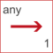

to_unit1Change the unit of a Real number to unit="1" |

|
This information is part of the Modelica Standard Library maintained by the Modelica Association.
SIunits.Conversions.to_unit1(r);
The function call "Conversions.to_unit1(r)" returns r with unit="1".
Modelica.SIunits.Velocity v = {3,2,1};
Real direction[3](unit="1") = to_unit1(v); // Automatically vectorized call of to_unit1
| r |
Type: Real Description: Real number |
|---|
| result |
Type: Real Description: Real number r with unit="1" |
|---|